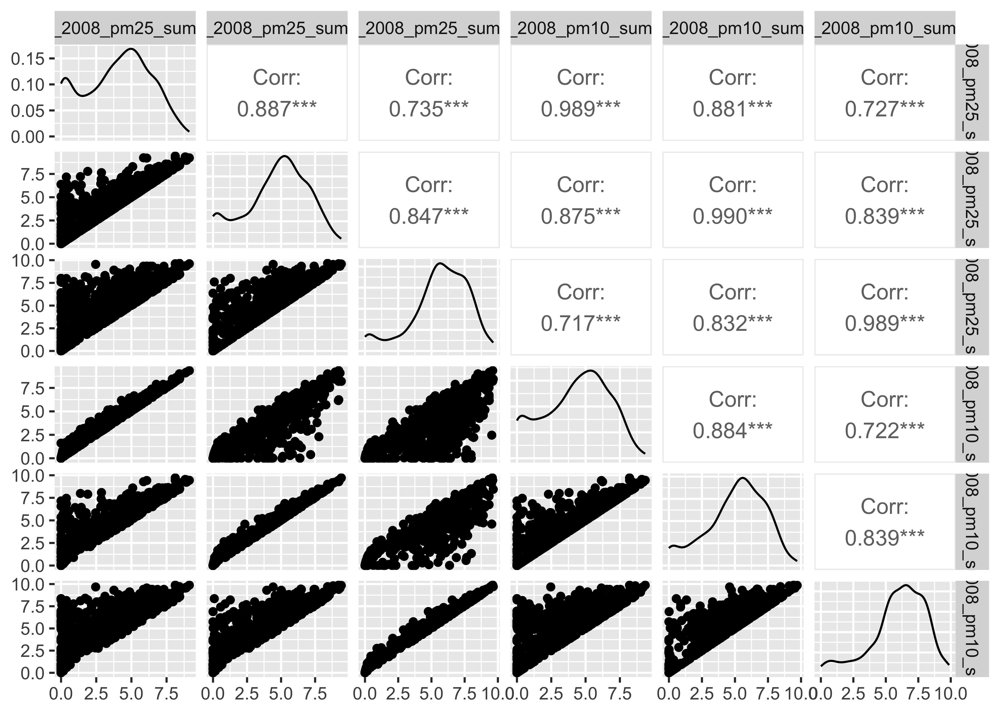

10-cs02-eda
UC San Diego
COGS 137 - Fall 2024
2024-11-07
CS02: Predicting Air Pollution (EDA)
Q&A
Q: Is there a way to find group members online?
A: Yes! On Piazza here
Q: I am curious about within our CS02 project, are we focusing on PM2.5, I know that there are finer PM that is not frequently tracked, could we focus on one of those for our project and point to the essential data gaps (i.e. there are lots of data on PM 2.5 out there but not enough on other sizes of PM)?
A: This is definitely a possible extension on the case study - certainly beyond expectations (as you would need additional data) but would be very cool.
Q: There wasn’t a specific part of the lecture that I found very confusing. I am a little worried about the code needed to generate the statistics for the second case study, but think that I just need a bit more practice with that (which I am certain we will be getting prior to the due date).
A: We are going to focus on this in class too!
Course Announcements
- üî¨ Lab 05 due tonight
- üîò CS01 Team Eval survey due tonight
- üìÑ Final Project Proposal due Tuesday
- üìã Lecture Participation survey ‚Äúdue‚Äù after class
Note: Get the data data in RStudio for today if you haven’t already (and install.packages "OCSdata", "skimr", and "GGally".
Question
With what accuracy can we predict US annual average air pollution concentrations?
Wrangling
Viewing the data
Take a look…
❓ Given the dataset we’re working with, what wrangling should we consider doing here?”
EDA
Getting to “know” the data
skimr
skimr | A helpful way to get an overall sense of a dataset
| Name | pm |
| Number of rows | 876 |
| Number of columns | 50 |
| _______________________ | |
| Column type frequency: | |
| character | 3 |
| numeric | 47 |
| ________________________ | |
| Group variables | None |
Variable type: character
| skim_variable | n_missing | complete_rate | min | max | empty | n_unique | whitespace |
|---|---|---|---|---|---|---|---|
| state | 0 | 1 | 4 | 20 | 0 | 49 | 0 |
| county | 0 | 1 | 3 | 20 | 0 | 471 | 0 |
| city | 0 | 1 | 4 | 48 | 0 | 607 | 0 |
Variable type: numeric
| skim_variable | n_missing | complete_rate | mean | sd | p0 | p25 | p50 | p75 | p100 | hist |
|---|---|---|---|---|---|---|---|---|---|---|
| id | 0 | 1 | 26987.96 | 1.578761e+04 | 1003.00 | 13089.15 | 26132.00 | 39118.00 | 5.603910e+04 | ▇▇▆▇▆ |
| value | 0 | 1 | 10.81 | 2.580000e+00 | 3.02 | 9.27 | 11.15 | 12.37 | 2.316000e+01 | ▂▆▇▁▁ |
| fips | 0 | 1 | 26987.89 | 1.578763e+04 | 1003.00 | 13089.00 | 26132.00 | 39118.00 | 5.603900e+04 | ▇▇▆▇▆ |
| lat | 0 | 1 | 38.48 | 4.620000e+00 | 25.47 | 35.03 | 39.30 | 41.66 | 4.840000e+01 | ▁▃▅▇▂ |
| lon | 0 | 1 | -91.74 | 1.496000e+01 | -124.18 | -99.16 | -87.47 | -80.69 | -6.804000e+01 | ▃▂▃▇▃ |
| CMAQ | 0 | 1 | 8.41 | 2.970000e+00 | 1.63 | 6.53 | 8.62 | 10.24 | 2.313000e+01 | ▃▇▃▁▁ |
| zcta | 0 | 1 | 50890.29 | 2.778447e+04 | 1022.00 | 28788.25 | 48172.00 | 74371.00 | 9.920200e+04 | ▅▇▇▅▇ |
| zcta_area | 0 | 1 | 183173481.91 | 5.425989e+08 | 15459.00 | 14204601.75 | 37653560.50 | 160041508.25 | 8.164821e+09 | ▇▁▁▁▁ |
| zcta_pop | 0 | 1 | 24227.58 | 1.777216e+04 | 0.00 | 9797.00 | 22014.00 | 35004.75 | 9.539700e+04 | ▇▇▃▁▁ |
| imp_a500 | 0 | 1 | 24.72 | 1.934000e+01 | 0.00 | 3.70 | 25.12 | 40.22 | 6.961000e+01 | ▇▅▆▃▂ |
| imp_a1000 | 0 | 1 | 24.26 | 1.802000e+01 | 0.00 | 5.32 | 24.53 | 38.59 | 6.750000e+01 | ▇▅▆▃▁ |
| imp_a5000 | 0 | 1 | 19.93 | 1.472000e+01 | 0.05 | 6.79 | 19.07 | 30.11 | 7.460000e+01 | ▇▆▃▁▁ |
| imp_a10000 | 0 | 1 | 15.82 | 1.381000e+01 | 0.09 | 4.54 | 12.36 | 24.17 | 7.209000e+01 | ▇▃▂▁▁ |
| imp_a15000 | 0 | 1 | 13.43 | 1.312000e+01 | 0.11 | 3.24 | 9.67 | 20.55 | 7.110000e+01 | ▇▃▁▁▁ |
| county_area | 0 | 1 | 3768701992.12 | 6.212830e+09 | 33703512.00 | 1116536297.50 | 1690826566.50 | 2878192209.00 | 5.194723e+10 | ▇▁▁▁▁ |
| county_pop | 0 | 1 | 687298.44 | 1.293489e+06 | 783.00 | 100948.00 | 280730.50 | 743159.00 | 9.818605e+06 | ▇▁▁▁▁ |
| log_dist_to_prisec | 0 | 1 | 6.19 | 1.410000e+00 | -1.46 | 5.43 | 6.36 | 7.15 | 1.045000e+01 | ▁▁▃▇▁ |
| log_pri_length_5000 | 0 | 1 | 9.82 | 1.080000e+00 | 8.52 | 8.52 | 10.05 | 10.73 | 1.205000e+01 | ▇▂▆▅▂ |
| log_pri_length_10000 | 0 | 1 | 10.92 | 1.130000e+00 | 9.21 | 9.80 | 11.17 | 11.83 | 1.302000e+01 | ▇▂▇▇▃ |
| log_pri_length_15000 | 0 | 1 | 11.50 | 1.150000e+00 | 9.62 | 10.87 | 11.72 | 12.40 | 1.359000e+01 | ▆▂▇▇▃ |
| log_pri_length_25000 | 0 | 1 | 12.24 | 1.100000e+00 | 10.13 | 11.69 | 12.46 | 13.05 | 1.436000e+01 | ▅▃▇▇▃ |
| log_prisec_length_500 | 0 | 1 | 6.99 | 9.500000e-01 | 6.21 | 6.21 | 6.21 | 7.82 | 9.400000e+00 | ▇▁▂▂▁ |
| log_prisec_length_1000 | 0 | 1 | 8.56 | 7.900000e-01 | 7.60 | 7.60 | 8.66 | 9.20 | 1.047000e+01 | ▇▅▆▃▁ |
| log_prisec_length_5000 | 0 | 1 | 11.28 | 7.800000e-01 | 8.52 | 10.91 | 11.42 | 11.83 | 1.278000e+01 | ▁▁▃▇▃ |
| log_prisec_length_10000 | 0 | 1 | 12.41 | 7.300000e-01 | 9.21 | 11.99 | 12.53 | 12.94 | 1.385000e+01 | ▁▁▃▇▅ |
| log_prisec_length_15000 | 0 | 1 | 13.03 | 7.200000e-01 | 9.62 | 12.59 | 13.13 | 13.57 | 1.441000e+01 | ▁▁▃▇▅ |
| log_prisec_length_25000 | 0 | 1 | 13.82 | 7.000000e-01 | 10.13 | 13.38 | 13.92 | 14.35 | 1.523000e+01 | ▁▁▃▇▆ |
| log_nei_2008_pm25_sum_10000 | 0 | 1 | 3.97 | 2.350000e+00 | 0.00 | 2.15 | 4.29 | 5.69 | 9.120000e+00 | ▆▅▇▆▂ |
| log_nei_2008_pm25_sum_15000 | 0 | 1 | 4.72 | 2.250000e+00 | 0.00 | 3.47 | 5.00 | 6.35 | 9.420000e+00 | ▃▃▇▇▂ |
| log_nei_2008_pm25_sum_25000 | 0 | 1 | 5.67 | 2.110000e+00 | 0.00 | 4.66 | 5.91 | 7.28 | 9.650000e+00 | ▂▂▇▇▃ |
| log_nei_2008_pm10_sum_10000 | 0 | 1 | 4.35 | 2.320000e+00 | 0.00 | 2.69 | 4.62 | 6.07 | 9.340000e+00 | ▅▅▇▇▂ |
| log_nei_2008_pm10_sum_15000 | 0 | 1 | 5.10 | 2.180000e+00 | 0.00 | 3.87 | 5.39 | 6.72 | 9.710000e+00 | ▂▃▇▇▂ |
| log_nei_2008_pm10_sum_25000 | 0 | 1 | 6.07 | 2.010000e+00 | 0.00 | 5.10 | 6.37 | 7.52 | 9.880000e+00 | ▁▂▆▇▃ |
| popdens_county | 0 | 1 | 551.76 | 1.711510e+03 | 0.26 | 40.77 | 156.67 | 510.81 | 2.682191e+04 | ▇▁▁▁▁ |
| popdens_zcta | 0 | 1 | 1279.66 | 2.757490e+03 | 0.00 | 101.15 | 610.35 | 1382.52 | 3.041884e+04 | ▇▁▁▁▁ |
| nohs | 0 | 1 | 6.99 | 7.210000e+00 | 0.00 | 2.70 | 5.10 | 8.80 | 1.000000e+02 | ▇▁▁▁▁ |
| somehs | 0 | 1 | 10.17 | 6.200000e+00 | 0.00 | 5.90 | 9.40 | 13.90 | 7.220000e+01 | ▇▂▁▁▁ |
| hs | 0 | 1 | 30.32 | 1.140000e+01 | 0.00 | 23.80 | 30.75 | 36.10 | 1.000000e+02 | ▂▇▂▁▁ |
| somecollege | 0 | 1 | 21.58 | 8.600000e+00 | 0.00 | 17.50 | 21.30 | 24.70 | 1.000000e+02 | ▆▇▁▁▁ |
| associate | 0 | 1 | 7.13 | 4.010000e+00 | 0.00 | 4.90 | 7.10 | 8.80 | 7.140000e+01 | ▇▁▁▁▁ |
| bachelor | 0 | 1 | 14.90 | 9.710000e+00 | 0.00 | 8.80 | 12.95 | 19.22 | 1.000000e+02 | ▇▂▁▁▁ |
| grad | 0 | 1 | 8.91 | 8.650000e+00 | 0.00 | 3.90 | 6.70 | 11.00 | 1.000000e+02 | ▇▁▁▁▁ |
| pov | 0 | 1 | 14.95 | 1.133000e+01 | 0.00 | 6.50 | 12.10 | 21.22 | 6.590000e+01 | ▇▅▂▁▁ |
| hs_orless | 0 | 1 | 47.48 | 1.675000e+01 | 0.00 | 37.92 | 48.65 | 59.10 | 1.000000e+02 | ▁▃▇▃▁ |
| urc2013 | 0 | 1 | 2.92 | 1.520000e+00 | 1.00 | 2.00 | 3.00 | 4.00 | 6.000000e+00 | ▇▅▃▂▁ |
| urc2006 | 0 | 1 | 2.97 | 1.520000e+00 | 1.00 | 2.00 | 3.00 | 4.00 | 6.000000e+00 | ▇▅▃▂▁ |
| aod | 0 | 1 | 43.70 | 1.956000e+01 | 5.00 | 31.66 | 40.17 | 49.67 | 1.430000e+02 | ▃▇▁▁▁ |
❓ What’s something you’ve learned about the data from the skimr output?
Things to note:
- data are summarized by variable type
empty/n_missinggives you a sense of how much data are missing for each variablen_uniqueforstateindicates that we have data for 49 states- many different distributions for continuous data, but many show bimodal distribution
- large range of possible values for many variables (i.e. population)
- Consider variable type - need more factors?
- Understand why ID is not uniformally distributed; figure out which are overrepresented; decide what to do
- log or other transformations necessary? decide during EDA
Why 49 “states”?
# A tibble: 49 × 1
state
<chr>
1 Alabama
2 Arizona
3 Arkansas
4 California
5 Colorado
6 Connecticut
7 Delaware
8 District Of Columbia
9 Florida
10 Georgia
# ℹ 39 more rows- DC is included
- Alaska and Hawaii are not
Number of monitors per city?
# A tibble: 2 × 50
id value fips lat lon state county city CMAQ zcta zcta_area
<dbl> <dbl> <dbl> <dbl> <dbl> <chr> <chr> <chr> <dbl> <dbl> <dbl>
1 6073. 11.3 6073 32.8 -117. California San Diego San … 9.68 92123 21148247
2 6073. 13.7 6073 32.7 -117. California San Diego San … 9.68 92113 13647793
# ℹ 39 more variables: zcta_pop <dbl>, imp_a500 <dbl>, imp_a1000 <dbl>,
# imp_a5000 <dbl>, imp_a10000 <dbl>, imp_a15000 <dbl>, county_area <dbl>,
# county_pop <dbl>, log_dist_to_prisec <dbl>, log_pri_length_5000 <dbl>,
# log_pri_length_10000 <dbl>, log_pri_length_15000 <dbl>,
# log_pri_length_25000 <dbl>, log_prisec_length_500 <dbl>,
# log_prisec_length_1000 <dbl>, log_prisec_length_5000 <dbl>,
# log_prisec_length_10000 <dbl>, log_prisec_length_15000 <dbl>, …# A tibble: 5 × 50
id value fips lat lon state county city CMAQ zcta zcta_area
<dbl> <dbl> <dbl> <dbl> <dbl> <chr> <chr> <chr> <dbl> <dbl> <dbl>
1 24510. 12.2 24510 39.3 -76.6 Maryland Baltimore… Balt… 10.9 21251 461424
2 24510. 12.5 24510 39.3 -76.7 Maryland Baltimore… Balt… 10.9 21215 17645223
3 24510. 12.8 24510 39.3 -76.5 Maryland Baltimore… Balt… 10.9 21224 24539976
4 24510. 14.3 24510 39.2 -76.6 Maryland Baltimore… Balt… 10.9 21226 25718732
5 24510. 13.3 24510 39.3 -76.6 Maryland Baltimore… Balt… 10.9 21202 4111039
# ℹ 39 more variables: zcta_pop <dbl>, imp_a500 <dbl>, imp_a1000 <dbl>,
# imp_a5000 <dbl>, imp_a10000 <dbl>, imp_a15000 <dbl>, county_area <dbl>,
# county_pop <dbl>, log_dist_to_prisec <dbl>, log_pri_length_5000 <dbl>,
# log_pri_length_10000 <dbl>, log_pri_length_15000 <dbl>,
# log_pri_length_25000 <dbl>, log_prisec_length_500 <dbl>,
# log_prisec_length_1000 <dbl>, log_prisec_length_5000 <dbl>,
# log_prisec_length_10000 <dbl>, log_prisec_length_15000 <dbl>, …San Diego has 2, while Baltimore has 5, despite having very similar population densities (popdens_county)…and San Diego having a much larger population (county_pop) and land area (county_area).
Feature Correlation
Why do we care if variables in our dataset are correlated?
- we don’t want to include redundant variables
- can add unnecessary noise to our algorithm causing a reduction in prediction accuracy
- can cause our algorithm to be slower
- can also make it difficult to interpret what variables are actually predictive
Taking a look at our numeric variables…

- deep blue | strongly, positively correlated
- deep red | strongly, negatively correlated
If we don’t care about direction, but only strength…and using hierarchical clustering:
Observations:
- development variables (
imp), road density (pri), and the emission (nei) variables all seem to be correlated with their group - none of the predictors are correlated with
value(our outcome)
Development (imp)

Emmissoins (nei)
Road Density (pri)

Warning: colors are reversed from above. If included in final report, you’d want consistency.
Are the categories correlated with one another?
Reminder:
- log_nei_2008_pm25_sum_10000 | Tons of emissions from major sources data base (annual data) sum of all sources within a circle with a radius of 10000 meters of distance around the monitor (Natural log)
- popdens_county | Population density (number of people per kilometer squared area of the county)
- log_pri_length_10000 | Count of primary road length in meters in a circle with a radius of 10000 meters around the monitor (Natural log)
– Highways only
- imp_a10000 | Impervious surface measure
– Within a circle with a radius of 10000 meters around the monitor
- county_pop | Population of the county of the monitor
Log-transforming right-skewed data

Your Turn
üí™ Try to learn at least three things about the data that we haven‚Äôt yet discussed now on your own.
Add your EDA to a Padlet https://padlet.com/shannon0ellis/cs02_eda